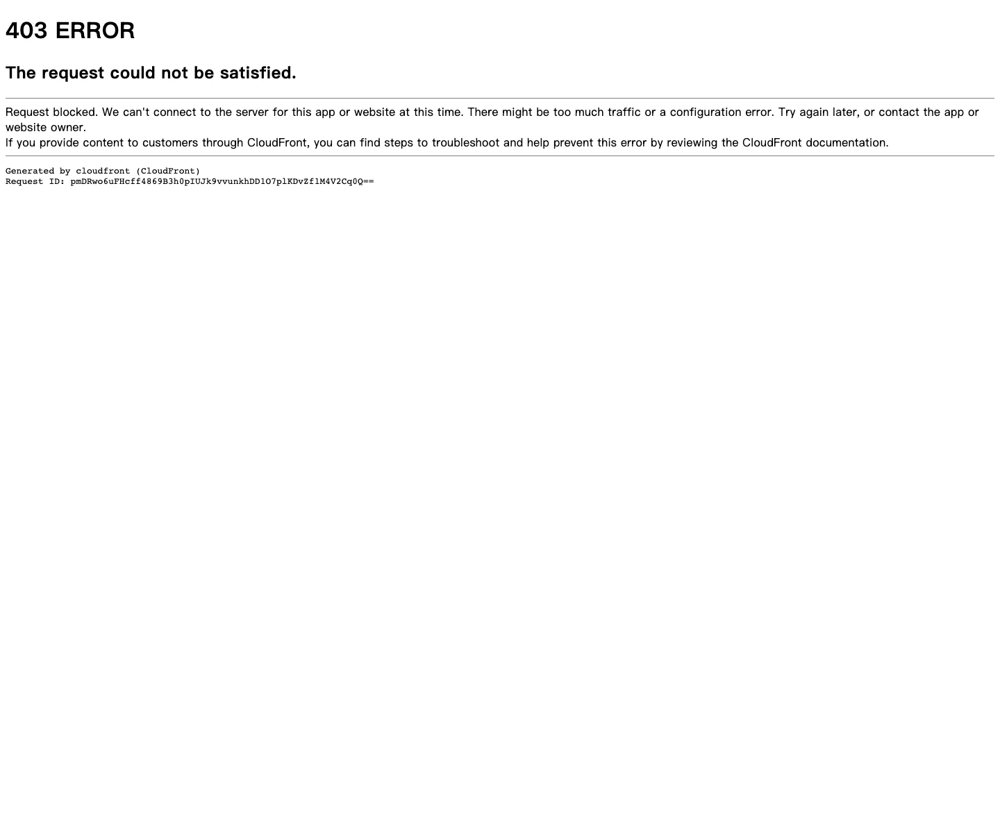

Ferrari 主题
Ferrari 的 Design.md 主题展示，围绕媒体内容、工业工具、制造工业、B2B 产品组织页面。
Luxury automotive. Chiaroscuro editorial, Ferrari Red accents, cinematic black.
媒体内容工业工具制造工业B2B 产品编辑/机构SaaS 产品开发工具浅色界面效率工具专业工具

来源
- 来源
- getdesign.md
- 镜像
- github:VoltAgent/awesome-design-md
- 网站
- https://ferrari.com/
- 详情
- https://getdesign.md/ferrari/design-md
色板
#181818: #181818#303030: #303030#da291c: #da291c#b01e0a: #b01e0a#ffffff: #ffffff#9d2211: #9d2211#969696: #969696#666666: #666666#8f8f8f: #8f8f8f#d2d2d2: #d2d2d2#ebebeb: #ebebeb#f7f7f7: #f7f7f7
字体
display: FerrariSansbody: FerrariSansmono: ui-monospacehints: FerrariSans,ui-monospace,Inter
圆角
control: 4pxcard: 6pxpreview: 4pxpill: 9999pxsource: design-md
间距
xxxs: 4pxxxs: 8pxxs: 16pxsm: 24pxmd: 32pxlg: 48pxxl: 64pxxxl: 96pxsuper: 128pxsource: design-md
使用建议
建议
- 建议：Reserve {colors.primary} (Rosso Corsa) for primary CTAs, the Cavallino mark, and F1 race-position highlights。
- 建议：Set every CTA at {rounded.none} (0px sharp corners) — the brand's signature precision。
- 建议：Render CTA labels in uppercase with 1.4px tracking via {typography.button}。
- 建议：Pair every hero with a full-bleed cinematic photograph — the photograph IS the depth。
- 建议：Use the explicit 8px spacing ladder ({xxxs} through {super}) rather than ad-hoc px values。
避免
- 避免：introduce a saturated brand color other than Rosso Corsa。
- 避免：use rounded or pill CTAs — sharp 0px corners are the brand button。
- 避免：bold display copy. The cinematic photography does the visual heavy-lifting。
- 避免：use Hypersail yellow outside the Hypersail sailing program context。
- 避免：use pure black canvas. The brand canvas is {colors.canvas} (#181818) — slightly warm。
查看 DESIGN.md